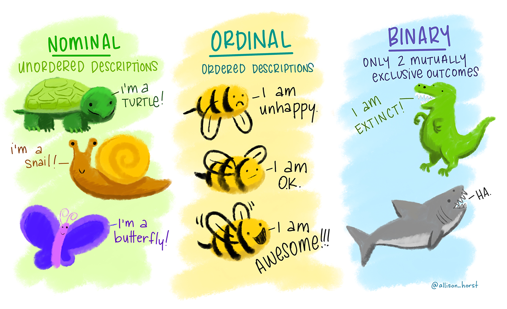

- 1
- numeric
- 2
- integer
- 3
- character
- 4
- logical
Datentypen und -strukturen

In unserem alltäglichen Leben haben wir ständig mit unterschiedlichsten Formen von Daten zu tun, meistens ohne uns darüber groß Gedanken zu machen. Beispielsweise haben wir es bei dem Versenden einer Textnachricht mit einer Reihe von unterschiedlichen Formen an Daten zu tun, die Nachricht an sich als auch den/die Empfänger:in - in Form von Text - als auch den Zeitpunkt - in Form von Zahlen bzw. eines Datums. Wenn wir mit diesen Daten arbeiten möchten, benötigen wir etwas Wissen darüber wie verschiedene Datenformate funktionieren.
1 Verschiedene Datentypen, Skalenniveaus und Datenstrukturen
Die Welt der Datenanalyse ist reichhaltig und vielfältig. Bevor wir jedoch in die Tiefe der quantitativen Datenanalyse eintauchen, ist es wichtig, die Grundlagen zu verstehen, die uns bei der Arbeit mit Daten leiten. In diesem Kapitel werden wir uns mit den grundlegenden Konzepten der Datentypen, Skalenniveaus und Datenstrukturen vertraut machen.
1.1 Datentypen in R
In der Datenanalyse ist die korrekte Interpretation und Handhabung von verschiedenen Datentypen von entscheidender Bedeutung. R bietet eine Vielzahl von Datentypen, die es uns ermöglichen, eine breite Palette von Informationen zu repräsentieren und zu verarbeiten. In diesem Kapitel werden wir uns mit den fünf grundlegenden Datentypen in R vertraut machen: Numeric, Integer, Logical, Character und Factor.
1.1.1 Numeric
Der Datentyp Numeric repräsentiert dezimale Zahlen. Beispiele für numerische Daten sind 4.5, -12, 0.75 usw. Numerische Daten werden oft für Berechnungen und mathematische Operationen verwendet.
1.1.2 Integer
Der Integer-Datentyp repräsentiert ganze Zahlen. Beachten Sie, dass Ganze Zahlen ebenfalls zum Datentyp NUmeric gehören, da diese als spezielle Art von Dezimalzahlen betrachtet werden - dabei gilt: alle ganzen Zahlen (Integer-Datentyp) sind numerische Daten, aber nicht alle numerischen Daten (Numeric-Datentyp) sind ganze Zahlen. Beispiele für Integer-Daten sind 4, -7, 100 usw.
1.1.3 Logical
Der Logical-Datentyp besteht aus sogenannten booleschen Werten, die genau zwei verschiedene Ausprägungen annehmen können: entweder TRUE (wahr) oder FALSE (falsch). Boolesche Werte werden häufig in logischen Ausdrücken und Bedingungen verwendet, um Entscheidungen zu treffen und Filter anzuwenden.
1.1.4 Character
Der Character-Datentyp repräsentiert Textwerte oder Zeichenketten. Textwerte werden in R in doppelten Anführungszeichen (” “) oder einfachen Anführungszeichen (’ ’) eingeschlossen. Beispiele für Character-Daten sind”Hallo”, “Datenanalyse” usw.
1.1.5 Factor
Der Factor-Datentyp wird für kategoriale Variablen verwendet, die eine begrenzte Anzahl von Merkmalsausprägungen (levels) haben. Ein Factor besteht aus den Merkmalsausprägungen selbst und optionalen Bezeichnungen (labels) für diese Ausprägungen. Factors sind hilfreich, um kategorische Daten in einer strukturierten und sinnvollen Weise zu speichern und zu analysieren.
In den kommenden Abschnitten dieses Kapitels werden wir uns ausführlicher mit jedem dieser Datentypen befassen. Wir werden lernen, wie man Daten erfasst, speichert und manipuliert, um aussagekräftige Analysen durchzuführen. Die korrekte Handhabung der Datentypen bildet die Grundlage für jede erfolgreiche Datenanalyse in R.
1.2 Skalenniveaus
Bei der quantitativen Datenanalyse ist es von entscheidender Bedeutung, die verschiedenen Skalenniveaus von Variablen zu verstehen. Skalenniveaus geben an, wie die Werte einer Variable gemessen werden und welchen Interpretationsraum sie besitzen. Die Kenntnis dieser Skalenniveaus hilft uns dabei, angemessene statistische Methoden anzuwenden und aussagekräftige Schlussfolgerungen aus unseren Analysen zu ziehen.
1.2.1 Nominales Skalenniveau
Am niedrigsten in der Hierarchie der Skalenniveaus befindet sich das nominale Skalenniveau. Hierbei werden Werte einer Variable lediglich zur Kategorisierung genutzt, ohne dass eine Reihenfolge oder quantitative Bedeutung besteht. Ein klassisches Beispiel wäre die Kategorisierung von Geschlechtern. Nominalskalierte Variablen können lediglich auf Gleichheit oder Ungleichheit überprüft werden.
1.2.2 Ordinales Skalenniveau
Ein Schritt weiter ist das ordinale Skalenniveau. Hierbei können die Werte einer Variable nicht nur kategorisiert werden, sondern es besteht auch eine natürliche Ordnung zwischen den Kategorien. Ein Beispiel hierfür wäre die Bewertung von Produkten auf einer Skala von “schlecht”, “mittel” bis “gut”. Allerdings sind die Abstände zwischen den Kategorien nicht quantitativ interpretierbar.
1.2.3 Intervall-Skalenniveau
Das Intervall-Skalenniveau ermöglicht nicht nur die Kategorisierung und Ordnung von Werten, sondern auch die Quantifizierung von Abständen zwischen den Werten. Bei dieser Skala ist die Differenz zwischen zwei Werten stets konstant, jedoch besitzt der Wert “null” keine inhärente Bedeutung. Ein Beispiel wäre die Temperaturskala in Celsius, bei der eine Temperaturdifferenz von 10 Grad Celsius immer gleichbedeutend ist, aber das Fehlen von Wärme (0 Grad Celsius) nicht bedeutet, dass keine Temperatur vorhanden ist.
1.2.4 Verhältnis-Skalenniveau
Das höchste Skalenniveau ist das Verhältnis-Skalenniveau. Hierbei besitzen die Werte nicht nur eine Ordnung und gleichbleibende Abstände, sondern der Wert “null” hat auch eine klare und inhärente Bedeutung. Dies ermöglicht die Durchführung von mathematischen Operationen wie Multiplikation und Division auf den Werten. Beispiele hierfür sind Gewicht, Größe oder Einkommen.
1.2.5 Skalenniveau versus Datentyp
Es ist wichtig zu beachten, dass die allgemeinen Skalenniveaus nicht eins zu eins den spezifischen Datentypen in R entsprechen. Zum Beispiel können kategoriale Variablen in R als Faktoren dargestellt werden. Diese können das Skalenniveau nominal oder ordinal aufweisen - um welches von den beiden es sich handelt, kann nicht mit R bestimmt werden. Numerische Variablen können ebenfalls unterschiedliche Skalenniveaus haben. Ob eine Variable dabei intervall- oder verhältnisskaliert ist muss durch die Analystin/den Analysten bestimmt werden. Dieser Unterschied zwischen den Konzepten der allgemeinen Skalenniveaus und den Datentypen in R erfordert eine sorgfältige Betrachtung, um sicherzustellen, dass wir unsere Daten angemessen interpretieren und analysieren.
1.3 Datenstrukturen in R
In R sind Datenstrukturen essentiell, um Informationen auf organisierte und effiziente Weise zu speichern und zu verarbeiten. In diesem Kapitel werden wir uns mit drei grundlegenden Datenstrukturen vertraut machen: Vektor, Matrix und Datenrahmen.
1.3.1 Der Vektor
Der Vektor ist die essentiellste und einfachste Datenstruktur in R. Ein Vektor ist eindimensional und enthält eine geordnete Sammlung von Elementen desselben Datentyps, er kann also entweder aus numerischen Werten, Integers (ganzen Zahlen), logischen Werten oder Characters (Textwerten) bestehen. Vektoren sind fundamental für viele Berechnungen und Operationen in R. Vektoren können in R mithilfe der Funktion c() erstellt werden, die die Elemente durch Kommas trennt. Im folgenden Beispiel erstellen wir für verschiedene Datentypen, die wir im vorherigen Kapitel kennengelernt haben, Beispiel-Vektoren und ordnen diesen Vektoren Namen zu.
Wir haben nun mit der Funktion c() Vektoren erstellt mit verschiedenen Datentypen. Wollen wir einen Vektor des Datentyps numeric erstellen, können wir diesen mit Zahlen befüllen, wie es bei Vektor a der Fall ist. Wollen wir hingegen spezifizieren, dass es sich ausschließlich um ganze Zahlen handelt und der Datentyp des Vektors daher integer ist, müssen wir dies mit einem L hinter den Zahlen angeben, wie wir es für Vektor b gemacht haben. Zur Erstellung eines Vektors des Datentyps character setzen wir die Werte in doppelte oder einfache Anführungszeichen, wie bei Vektor c. Für einen logischen Datentyp, befüllen wir den Vektor mit den Werten TRUE und False, wie in Beispiel d. Wollen wir uns den Datentyp eines Vektors anzeigen lassen, können wir dies mit dem Befehl class() machen.
Wollen wir uns bestimmte Werte in einem Vektor anzeigen lassen, können wir diese mit eckigen Klammern in R auswählen. Wollen wir beispielsweise den Wert, der an zweiter Stelle steht im Vektor a, machen wir das wie folgt:
Wollen wir den zweiten, dritten und vierten Wert von Vektor a, können wir durch einen Doppelpunkt die Spanne zwischen dem zweiten und vierten Wert angeben:
Wollen wir einen Vektor des fünften Datentyps factor erstellen, müssen wir etwas anders vorgehen als bei den anderen. Hier starten wir zunächst mit der Erstellung eines Vektors mit der Funktion c() und wandeln diesen dann anschließend mit der Fuktion factor() zum gewünschten Datentyp um. In folgendem Beispiel erstellen wir einen Vektor, der Daten für die Nutzung von verschiedenen Verkehrsmitteln enthalten soll. Zuerst erstellen wir den numerischen Vektor, der die Verkehrsmittel als Zahlenwerte enthält.
Anschließend können wir den numerischen Vektor in einen des Datentyps factor umwandeln und den verschiedenen Verkehrsmitteln jeweils ein Label zuordnen. Bei der Zuordnung der Labels müssen wir die Reihenfolge beachten: Das erste Label, das wir vergeben, wird dem niedrigsten Zahlenwert (in unserem Fall 1) zugeordnet, das zweite dem zweitniedrigsten (2) und so weiter.
factor_verkehrsmittel <- factor(verkehrsmittel, labels=c("bus","zug","fahrrad","auto","andere"))
class(factor_verkehrsmittel)[1] "factor"Lassen wir uns den zuerst erstellten numerischen Vektor verkehrsmittel anzeigen, bekommen wir die numerischen Werte:
Lassen wir uns hingegen den in einen factor umgewandelten Vektor factor_verkehrsmittel anzeigen, bekommen wir die Werte mit ihren entsprechenden Labeln angezeigt. In der letzten Zeile des Outputs sehen wir außerdem, welche möglichen Merkmalsausprägungen vorkommen können (siehe Levels):
1.3.2 Die Matrix
Neben der essentiellen Datenstruktur des Vektors gibt es noch weitere Strukturen, die wir kennen müssen, um mit R Daten zu analysieren. Eine davon ist die Matrix, eine zweidimensionale Datenstruktur, die aus Zeilen und Spalten von Elementen besteht. Alle Elemente in einer Matrix müssen denselben Datentyp aufweisen. Matrizen können in R mit der Funktion matrix() erstellt werden. Grundlage hierfür ist wieder zunächst ein Vektor, erstellt mit der c(), der dann mit der Funktion matrix() umgewandelt wird:
[,1]
[1,] 1
[2,] 2
[3,] 3
[4,] 4
[5,] 5
[6,] 6
[7,] 7
[8,] 8
[9,] 9In diesem Beispiel erstellen wir zunächst mit der Funktion c() einen numerischen Vektor namens vec_1. Diesen wandeln wir mit der Funktion matrix() in eine Matrix um, die wir matrix_1 nennen. Dann lassen wir uns matrix_1 anzeigen. Wir können sehen, dass die erstellte Matrix aus einer Spalte und neun Reihen besteht, die mit den Zahlenwerten des Vektors vec_1 befüllt wurden. Wir können die Anzahl der Spalten und Reihen in der Matrix mit den Argumenten ncol (number of columns = Spaltenanzahl) oder nrow (number of rows = Reihenanzahl) verändern:
Für matrix_2 verwenden wir wieder den Vektor vec_1, haben dieses Mal aber angegeben, dass die Matrix drei Spalten (ncol = 3) haben soll. Die Anzahl an Reihen ergibt sich damit automatisch. Anstatt der Spaltenanzahl, können wir aber auch angeben, dass die Matrix drei Reihen haben soll (nrow = 3), in diesem Fall ergibt sich die Anzahl an Spalten automatisch:
Wir sehen, dass matrix_3 identisch ist mit matrix_2, beide haben jeweils drei Reihen und drei Spalten. Eine Matrix wird also immer befüllt mit allen Werten des Vektors, auf dem sie basiert. Versuchen wir, die Spalten- und Zeilenanzahl so festzulegen, dass die Matrix nicht alle Werte des Vektors enthalten kann - geben wir also eine konfligierende Spalten- und Zeilenanzahl an - erhalten wir eine Warnung:
1.3.3 Der Datenrahmen bzw. Dataframe
Neben dem eindimensionalen Vektor und der zweidimensionalen Matrix, gibt es noch eine weitere grundlegende Datenstruktur, mit der wir in der quantitativen Datenanalyse arbeiten: der Datenrahmen. Hierbei handelt es sich um eine zweidimensionale Datenstruktur, die ähnlich einer Tabelle aussieht. Im Gegensatz zur Matrix ermöglicht der Datenrahmen die Speicherung unterschiedlicher Datentypen in verschiedenen Spalten, was besonders hilfreich ist, wenn wir mit realen Datensätzen arbeiten.
In einem Datenrahmen repräsentiert eine “Variable” eine einzelne Messgröße oder Eigenschaft. Variablen können verschiedene Datentypen aufweisen (numerische Werte, Texte, logische Werte oder kategoriale Merkmale). Jede Variable wird durch eine Spalte im Datenrahmen dargestellt. Eine “Beobachtung” hingegen entspricht einer einzelnen Einheit, von der wir Daten gesammelt haben. Beobachtungen werden als Zeilen im Datenrahmen angeordnet. Jede Zeile enthält die Datenwerte für jede der zugehörigen Variablen.
Beispielsweise könnte eine Beobachtung in einem Datenrahmen zur Erfassung von Studierendendaten Informationen wie den Namen, das Alter und die erreichte Note für einen bestimmten Kurs enthalten. Zusammen repräsentieren Variablen und Beobachtungen die Informationen, die wir in einem Datensatz haben. Der Datenrahmen organisiert diese Informationen in einer tabellarischen Struktur, die es uns ermöglicht, Muster, Trends und Beziehungen zwischen den Variablen und Beobachtungen zu identifizieren. Dies ist der Grundstein quantitative Datenanalysen. Um in R einen Datenrahmen zu erstellen, bilden Vektoren wieder die Grundlage. Diese dienen als Variablen, d.h. als Spalten, in unserem Datenrahmen und werden mit dem Befehl data.frame() zusammengefügt:
In diesem Beispiel erstellen wir zunächst mit der Funktion c() die Vektoren (Variablen) name, alter und note mit jeweils vier Werten. Anschließend erstellen wir aus diesen einen Datenrahmen mit dem Befehl data.frame(), der die Variablen durch Kommata trennt. Lassen wir uns den erstellten Datenrahmen, den wir studierendendaten genannt haben, anzeigen, sehen wir, dass jede Zeile eine Beobachtung enthält, nämlich den Namen, das Alter und die Note einer Person. Jede Spalte enthält eine der drei Variablen:
1.4 Zusammenfassung
In diesem Kapitel haben wir die Grundlagen der Datentypen, Skalenniveaus und Datenstrukturen erkundet, die die Grundlage für unsere quantitative Datenanalyse bilden. Wir haben gelernt, wie unterschiedliche Datentypen uns erlauben, verschiedene Arten von Informationen darzustellen, und wie Skalenniveaus die Bedeutung von Variablenwerten verdeutlichen. Weiterhin haben wir Datenstrukturen wie Vektoren, Matrizen und Datenrahmen kennengelernt, die uns ermöglichen, diese Informationen strukturiert zu speichern und zu verarbeiten. Im folgenden Kapitel werden wir lernen, wie wir Variablen und einzelne Beobachtungen auswählen, manipulieren und transformieren zu können, um sie auf unsere Analysezwecke anzupassen.